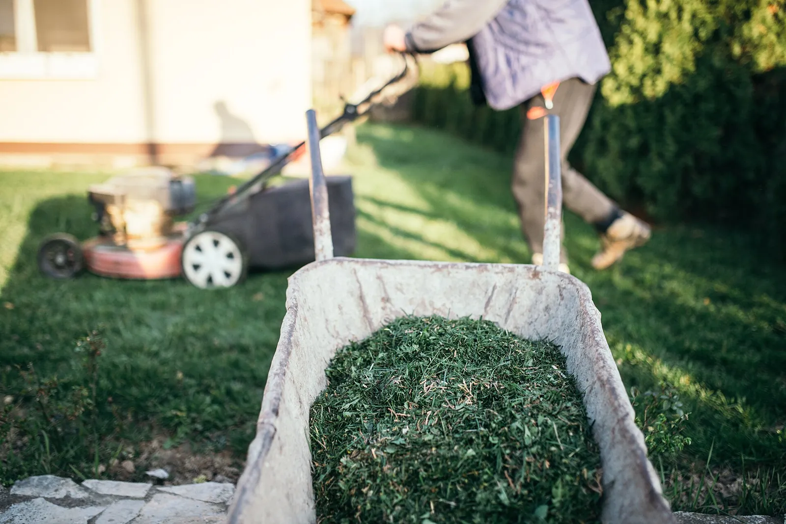

Yes. The pests and diseases live in the soil, so a raised bed needs rotating like any ground. Here's why, and why digging out the soil is the costly way to do the same job.

Photo: Shixart1985 · CC BY 2.0, via Wikimedia Commons.
What you need
A record of what grew in the bed last year (the planner keeps this for you)
More than one bed, or one bed you can divide into zones
Clean tools, so you don’t carry soil between zones
Yes, because the frame around a raised bed changes nothing about where the pests live. Soil-borne diseases, nematodes, and overwintering insects live in the soil, and a wooden box full of soil is still soil. So the same rotation you’d do in the open ground applies inside the bed.
Does rotation even apply in a raised bed?
The rotation windows the planner enforces are written about plant families and the ground they grew in. A frame around that ground makes no difference:
Don't plant nightshades where nightshades grew in the last 3 years
If you skip this, you lose real yield. The planner warns you.
How it works: Alternaria solani (early blight) and Septoria lycopersici overwinter on tomato debris and solanaceous weeds; a 2-3 year break plus debris removal starves this inoculum. Fusarium has a very narrow host range, so rotating away from the host is effective. Verticillium is the exception. Its microsclerotia persist ~10 years and it infects 300+ host families, so a garden-scale rotation does not control it.
Evidence: checked against 5 sources in the research-based literature.
Verticillium wilt tends to affect a wide range of hosts and can infect many unrelated plants. Fusarium spp., on the other hand, have very narrow host ranges.
Remedy
Plant nightshades in different ground, or wait until 3 years have passed since this ground last held them. Clear and remove the old debris either way, because the inoculum overwinters on it.
If you skip this, you lose real yield. The planner warns you.
How it works: Melittia cucurbitae overwinters as a pupa in the soil where its host grew and emerges the next summer; Anasa tristis overwinters as an adult in sheltered sites (plant debris, under boards or rocks) and flies to cucurbits in spring. A host-free break cuts local carryover, but both are strong fliers that re-invade from a distance, so rotation is only partial and works best paired with fall sanitation (destroy spent vines).
Evidence: checked against 4 sources in the research-based literature.
… squash vine borers spend the winter in the soil near their host plants ... Practice rotation ... planting cucurbits in different areas of your garden if possible, or alternate seasons
Crop rotation away from previously infested fields helps reduce local populations, as overwintering pupae remain in the soil. However ... fields often need to be rotated more than 5 miles away as SVB can fly into fields from long distances.
Squash bugs can live through the winter as adults in sheltered places, such as under plant debris, around buildings, or under rocks. When adults come out in the spring, they fly to growing cucurbit plants.
Plant cucurbits in different ground, or wait 3 years. Destroy the spent vines in autumn and clear debris and boards nearby. The pupae overwinter in the soil where the crop grew, the adults in the shelter around it. Rotation is only partial; both pests fly in from a distance.
If you skip this, you lose real yield. The planner warns you.
How it works: Plasmodiophora brassicae forms thick-walled resting spores that survive in soil more than 10 years. They germinate in wet, acidic soil (pH < 7); liming above ~7.2 suppresses infection. Spores outlast any garden rotation, so a host-free break reduces but does not clear inoculum.
Evidence: checked against 3 sources in the research-based literature.
Plant brassicas in different ground, or wait at least 4 years (extension recommends 4 to 7). Rotation alone is not a cure, because the resting spores outlast it. Raising soil pH above ~7.2 suppresses infection.
You don't have to move every crop every single year by rule. What matters is keeping each crop family out of the same soil long enough to starve its diseases, commonly three to five years. Rotating yearly is a good habit. It isn't a law, and perennials like asparagus and rhubarb stay put for years.
What is known
Rotation works by starving a pathogen out of the soil, so the right interval depends on how long that pathogen survives, and for many diseases that cannot be stated precisely. Extension advice is to keep a crop family out of the same soil for three to five years; clubroot of the mustard family can survive seven years, bacterial spot needs at least two years without a host, and soil-dwelling soft-rot bacteria are not managed by rotation at all. Moving families every year is a sensible habit. It isn't a law, and Milpa's rules carry the intervals that have named mechanisms. Perennials are the exception. Asparagus and rhubarb stay in one spot for years, and cultivating too deep damages asparagus crowns.
Rotating crops each year and only growing vegetables in the same family in the same area every 3 to 5 years starves out most pathogens that cause stem and leaf diseases.
Cultivating too deep, or at the wrong time in the season, can damage the crowns and emerging spears.
Compost and good soil care make a bed more forgiving, because a vigorous plant shrugs off more. They do not remove a pathogen that specializes in your tomatoes.
What makes rotation harder in a small bed?
Rotation only works if you keep the ground separated. Moving soil between zones undoes the benefit, and soil moves on shovels, hoes, tiller tines, wheelbarrow tires, and the soles of your shoes. A bed you dig over all at once mixes the very soil you were trying to keep apart. So:
Rotate whole beds where you can. It beats rotating quadrants of one bed.
If you only have one bed, rotate by zone within it, and lean harder on the other tools: compost, cover crops between seasons, and disease-resistant varieties.
Don’t carry soil or debris from a zone that had a problem into a clean one.
Why not just swap the soil out each year?
Some advice says to skip rotation and dig out and replace the bed’s soil each year. You can, but it’s the costly way to do what rotation does for free. Rotation means planting a different family next time. Replacement means buying and hauling cubic feet of soil every season and throwing away the biology you built. Save soil replacement for a confirmed, persistent problem, and use rotation as the standing, no-cost control.
The guide on crop rotation has the full family list and how far apart to space the same crop. This one answers whether the bed exempts you. It doesn’t.
Further reading
Good places to read more about the technique on this page. The grade on each card comes from that card’s own sources.